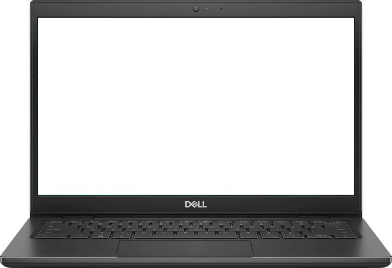

UI DESIGN · INTERACTION DESIGN · WEBFLOW
Totally Fictional Games Studio
A fictional game studio experience designed to explore interface design, visual identity, and how interactive elements can bring a studio's world to life.

THE PROJECT
Making a fictional studio feel like a real one.
Totally Fictional Games Studio is a self-directed interface and digital design project exploring how a fictional brand can become a cohesive, believable online experience.
Rather than designing a single landing page, I wanted to create the feeling of an established game studio with its own games, characters, news, and personality. This meant thinking beyond individual visuals and considering how the content, navigation, and interface elements could work together as one experience. The project was designed and built in Webflow, giving me the opportunity to bring the interface into a working, responsive website.
THE PROBLEM
How do you make a fictional studio feel real with only two website pages?
The goal wasn't simply to create another game studio landing page. I wanted the experience to feel like a legitimate studio, with its own identity, games, characters, and voice.
The biggest challenge came from the Webflow plan I was working with, which limited the project to two actual website pages. The original concept called for a much larger experience with dedicated areas for games, characters, news, the studio, and careers.
This made the challenge about more than visual design. I also needed to consider information architecture: how to group related content, establish a clear hierarchy, and help visitors understand where to go without relying on a separate page for every section.
THE SOLUTION
Turning a two-page limitation into a cohesive studio experience.
Rather than letting the page limitation dictate the entire design, I treated the two available pages as larger experiences made up of clearly organized sections.
Related content was consolidated into structured sections, supported by section-based navigation, reusable interface components, and a clear visual hierarchy. These decisions helped the experience feel more complete while keeping its content accessible and straightforward to explore.
The result was a fictional studio experience capable of presenting games, characters, news, company information, and careers content without requiring a separate page for every topic.
I then implemented the layouts in Webflow, adapting the interface for desktop and mobile screens.
VISUAL DIRECTION
Building a studio identity with room to experiment.
Because the studio was completely fictional, I had the freedom to develop its identity and visual language from the ground up.
The visual direction was designed to make the studio feel established while giving it a distinct personality. The interface needed to support multiple fictional games, each with its own identity, without making the overall experience feel disconnected.

The games page establishes the overall visual identity and tone of the experience.

Each fictional title gets its own visual presence within the larger studio identity.
BRAND & PERSONALITY
BIG IDEAS. BIGGER GAMES. QUESTIONABLE DECISIONS.
The fictional nature of the studio gave me room to experiment with its voice as much as its visual identity.
Rather than presenting the studio as an overly serious corporate game company, I gave the brand a slightly ridiculous personality. That tone carries through the interface's headlines, descriptions, game concepts, and supporting content.
The goal was to make the experience feel believable while giving visitors something memorable. The writing and visuals work together to establish the studio's character rather than treating branding as something separate from the interface.
THE EXPERIENCE
Designed as a complete studio experience.
The final experience brings together the studio's visual identity, game presentations, company information, careers content, and news in one cohesive interface.
I developed the layouts, visual hierarchy, UI elements, imagery, and responsive presentation, then implemented the design in Webflow. Across the experience, the goal was to make different types of content feel connected while allowing each section to maintain its own purpose.

Studio and company information.

News content and supporting interface design.

RESPONSIVE DESIGN
Making the interface work beyond the desktop.
The interface was designed with responsive behavior in mind rather than treating mobile as an afterthought.
Layouts, imagery, navigation, and content sections were adjusted for smaller screens so the experience could maintain its visual identity while remaining practical to navigate.
REFLECTION
What I took away from the project.
Totally Fictional Games Studio gave me the
opportunity to design a complete digital experience
without the constraints of an existing client or
established brand. It allowed me to experiment with
visual identity, interface layouts, responsive
behavior, reusable components, and the relationship
between branding and UI design.
Working within Webflow's two-page limitation also
pushed me to think more carefully about information
architecture and content organization. Instead of
treating the limitation purely as a technical
restriction, I used it as a reason to rethink how
the experience was structured and how visitors
could move between different types of content.
Most importantly, the project reinforced how much
personality and clarity can come from the details
of an interface: its visual hierarchy, content,
navigation, and interactions.